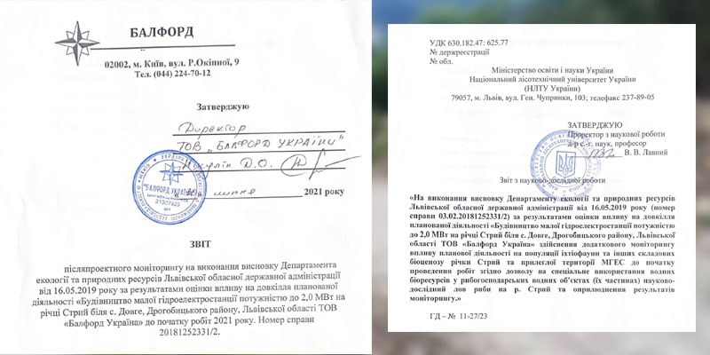

News
Balford Ukraine LLC

"Balford Ukraine" LLC is pleased to announce
That reports on research works have been prepared and signed in accordance with the recommendations for the implementation of the conclusion of the environmental impact assessment.
Read more
Unique pump room opened near the Dovhe-Hirsʹke village (Video)
On September 29, 2019, the 15th traditional procession to the Heroyiv Nebesnoyi sotni mountain took place in the Dovhe-Hirsʹke village.
Read more
Construction of a pump room for drinking water supply
Repair of the roof of the Narodny dim: in the process of restoration, summer 2019
Read more
Road planning for the Sopit village
Signing a social agreement on the development of the Dovhe-Hirsʹke village
Read more
Repair of the bridge over the Stryi river
Balford Ukraine LLC helped the residents of the Dovhe-Hirsʹke village, Drohobych district, Lviv region to repair the bridge over the Stryi river.
Read more
The first in Ukraine hydroelectric power plant of a new type in the Dovhe-Hirsʹke village
On March 12, 2019, a public hearing was held in the Dovhe-Hirsʹke village on the environmental impact of the construction of a 2 MW hydroelectric power plant.
Read more
Small hydropower: German-Austrian experience
Small hydropower: German-Austrian experience of Balford Ukraine LLC: "How we got to Germany", "Hydropower evolution", "Austrian impression" and more.
Read more
24.04.2018 Dovge. GES. Norway Embassy in Ukraine
Lviv district administration. Group of norvegian consultants, Balford Ukraine. Project 2MVT + 2 MVT
Read more